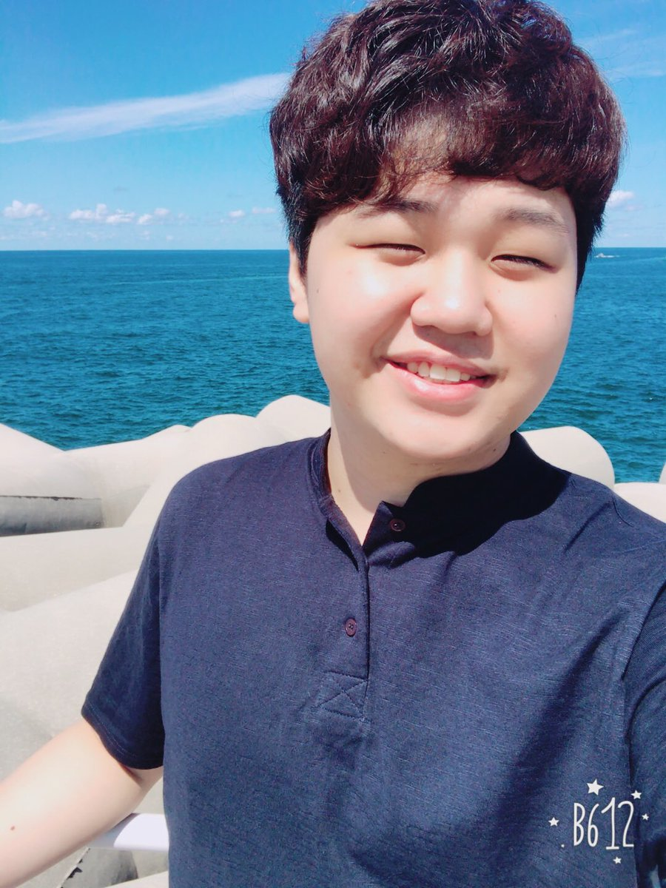

김종인의 모든것을 알아보자
김종인(1994년 1월 6일 ~ )은 대한민국의 전직 리그 오브 레전드 프로게이머로 선수 시절 포지션은 AD 캐리였으며 PraY라는 아이디를 사용했다. 별명 프짱,프교수

2012년 6월 22일 프레딧 브리온(전 나진 e-엠파이어 블랙 소드) 입단을 통해 프로 입문을 알린 김종인은 이후 2019년까지 7년동안 한화생명 e스포츠, DRX, KT 롤스터에서 활동하며 LCK 4회 우승 및 2회 준우승, LCK 스프링 2018 포스트시즌 MVP, NLB 2회 우승 및 2회 준우승, MLG 2012 폴 시즌 챔피언십 준우승, 리그 오브 레전드 월드 챔피언십 2015 준우승, 리그 오브 레전드 올스타전 2015 우승, 리그 오브 레전드 올스타전 2016 준우승, 2016 LoL KeSPA컵 우승, 2017 LoL KeSPA컵 준우승, 리그 오브 레전드 미드 시즌 인비테이셔널 2018 준우승, 리프트 라이벌즈 2018 준우승 등 국내외 메이저 대회에서 굵직한 성과들을 남겼으며 이후 2020년 선수 생활을 마감했다. 그리고 2020년 3월 11일 리턴 오브 챔피언스 코리아에 팀 데마시아 소속으로 출전하여 팀의 2-1 승리를 이끌었고 이에 힘입어 3세트 MVP에 선정되었다.